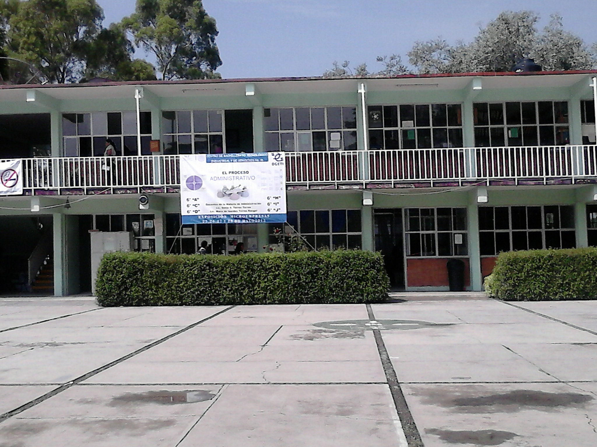
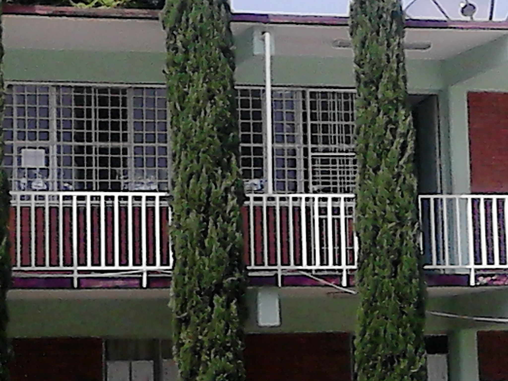
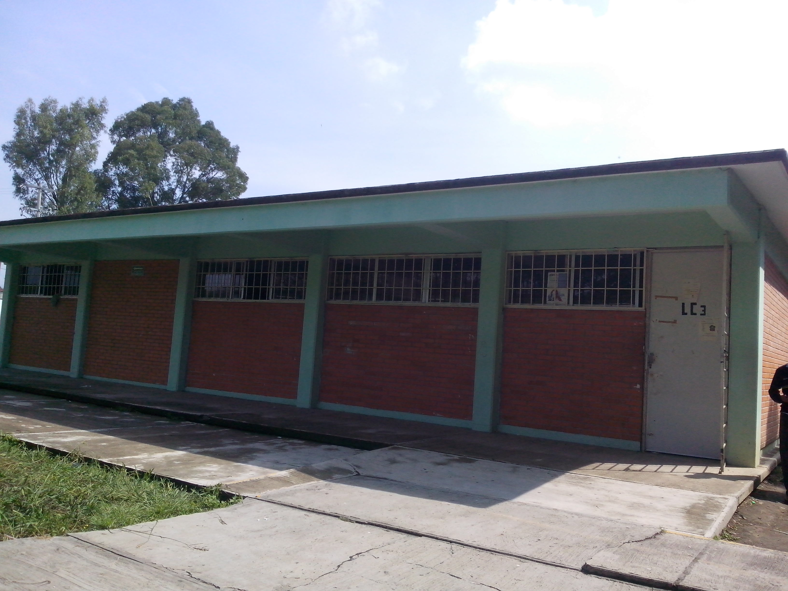
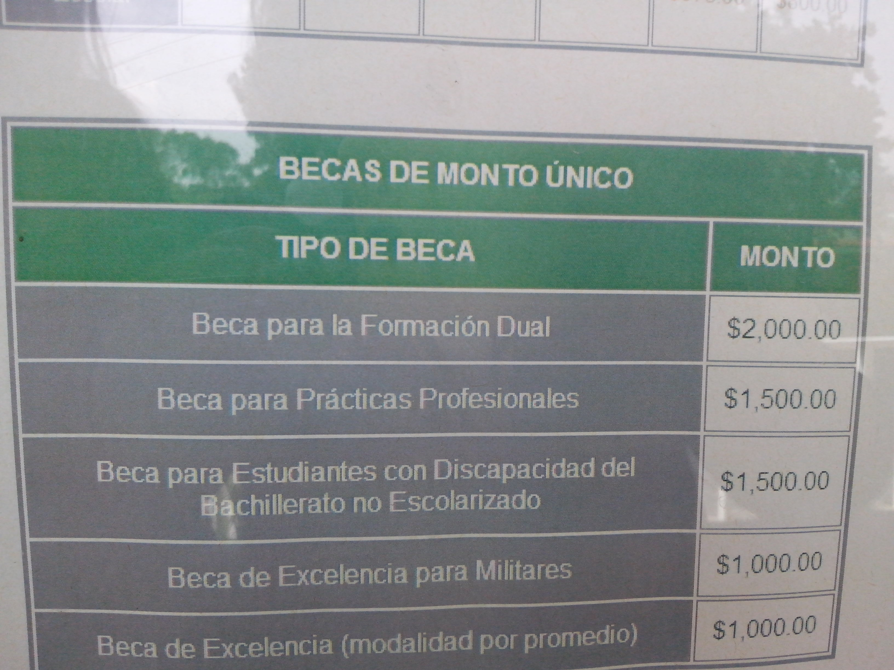
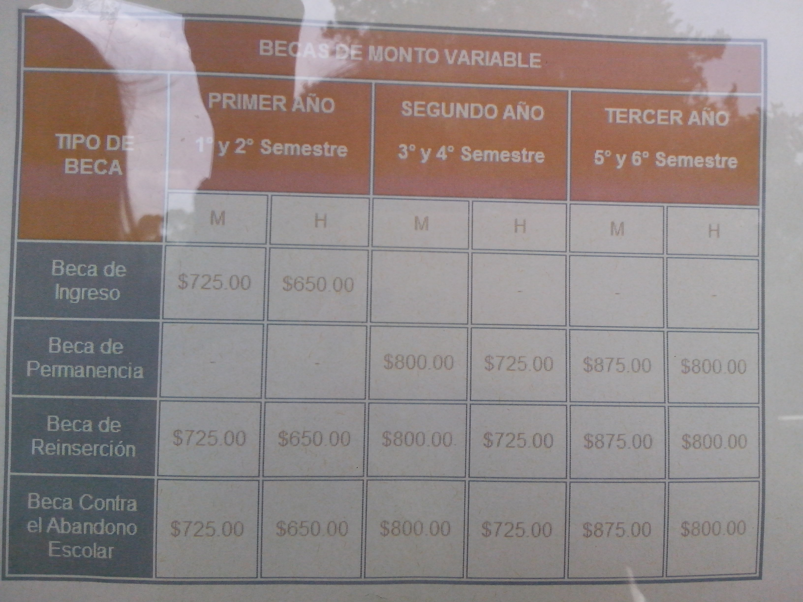

ESCUELA CBTIS 16

APLICACION 6
ALEJANDRA CARRANZA CUAUTLE
TEMA 1
INFORMACION
REQUISITOS NUEVO INGRESO
*Registro de aspirantes a partir del 10 de Febrero al 25 de Junio
*Constancia de 3er año de secundaria
*Acta de nacimiento (copia en reduuccion tamaño carta)
*2 fotografias tamaño infantil
*CURP
*curso de nivelacion de 7 dias
*Presentar examen de admision
SUBTEMA 11
BIBLIOTECA
La escuela cuenta con una amplia biblioteca en la cual se pueden encontrar diversos libros desde fisica hasta literatura.
En esta instalacion se puede encontrar inmobilioario como mesas y sillas para disfrutar de una lectura tranquila. La persona encargada de esta área es muy accesible y te ayuda a encontrar el material que estas buscando. El unico requisito es ser alumno de la institución y contar con tu credencial estudiantil vigente.cuanta con computadore para que l alumno pueda ir a realizar sus trabajos (solo requiere registrarse en la ventanilla para saber si esta disponible) solo neceita poner el nombre del alumno, numero de equipo. cuenta con internet las maquinas para que loa alumnos hagan un mejor trabajo para sus materias.para pedir o solicitar un libro se necesita su credencial para poder darle el libro y llevarselo a casa y si solo es requerido para el momento solo registrarse en la librera y cuando ya no se ocupe ir a devolverlo y asegurarse y borar su nombre para evitar problemas tamto para el alumno comop el encargado de la biblioteca.

SUBTEMA 12
LABORATORIOS
El laboratorio de fisica cuenta con instrumenos ncesarios para ser ocupados para los alumnos para poder hacer sus practicas necesarias para su aprendizaje para llevar un estudio adecuado y satisfactorio para desempeñarse en el conocimiento y llevarlo en practica.Para asi ver reacctivos y soluciones para ver lo que sucede en vivo no en solo dibujo.Tambien se cuenta con dos laboratorios de quimica para realizar practicas, descubrientos, hacer uso de los microoscopios, observar en ellos mas alla de lo que no se puede observar.Solo se requiere que para su uso este a cargo un profesor por si ocurre un problema;los microoscopios son entregados de forma exacta y adecuada, para el uso de laboratorios se requiere, limpieza, orden,respto, cuidado, buen manejo de los aparatos seguridad en los aparatos y limpieza en los laboratorios, el laboratorio de ingles contiene equipos, con utilidad cada un es eclusivamente para el uso de aprendizaje en ingles para mejora entretenimiento para los alumnos
TEMA 2
OFICINAS
TALLERES
La escuela contiene 4 carreras tecnicas para los alumnos para asi contener una carrera tecnica, los alumnos escojeran la carrera que desean llevar o aprender de ella en la escuela se enseñara lo practico y lo necesario para su aprendizaje que tengan o lleguen a tener por medio de su esfuerzo para aprendr. No es necesario que sepan en la escuela aprenderan a saber lo necesario.MECANICA INDUSTRIAL ofrece las competencias profesionales que permiten al estudiante dar mantenimiento a los sistemas mecánicos manejo de las maquinas herramientas.ELECTRICIDAD elaborar instalaciones electricas residenciales y comerciales dar mantenimiento a motores y generadores de corriente alterna y corriente continua. PROGRAMACION editar software integrado para la creacion de programas de aplicacion y diseño de base de datos.LOGISTICA permiten al estudiante realizar actividades dirigidas a la dministracion de bienes.
SUBTEMA 21
TALLER DE PROGRAMACION
Los talleres de computo son 4; los cuantro son checados por una persona encarga para cuidarla los equipos y al mismo tiempo mantenerlos limpios
los profesores checaran los equipos para el lo que les enseñaran en el transcurso del semestre para asi llevar a los alumnos con buen desempeño en el aprendizaje;
el uso de programas como hacer algo en el programa asi tambien como hacer un programa para su desglose de trabajo .
Diseñar sistemas de computo y servicios relacionados(desarrollo de programas aplicados al manejo de base de datos y Net.),
editar y difundir contenido a traves de internet, realizar servicios de busqueda en la red y comercio electronico,desarrollar aplicaciones para telefonos celulares.

SUBTEMA 22
TALLER DE MECANICA
Los tornos de mecanica llevan un mantenimiento para asi que los alumnos no tengan ningun problema a utilizarlos;
los alumnos para obtener su material es necesaria su credencial para sacar su material y darlos para realizar sus trabajos y hacer uso de los equipos y instrumentos para fabricar una pieza
manejo de maquinas de control numerico
soldar piezas matalicas con arco electrico y oxigas, procesos de ajuste de piezas mecanicas,dar mantenimiento a los sistemas mecanicos, menejo de maquinas y herramienas convencionales
TEMA 3
BECAS
INICIO
las becas son beneficio para los alumnos con un promedio estable y en contra de que abandonen la escuela para trabajar y no dejar de estudiar;
las becas son para los alumnos que lo requieran; el alumno no puede obtener mas de 1 beca si en caso que solicitan sera rechazada automaticamente por el hecho que no se puede llevar 2.
son parara aquellos jovenes continuen con sus estudias para que no lo descuiden ya que en ciertas ocaciones tienen que dejarlo para dar manutencion n su casa
SUBTEMA 31
BECA MEDIA SUPERIOR
Programa de gobierno federal en cual tiene como objetivo apoyar economicamente a los alumnos de nivel medio superior que se encuentran con problemas financieros para seguir su estudio
pidiendo como requisito contrar con un promedio e 8 y estar inscrito en una escuela federal.la convocatoria sale cada año en el mes de agosto-septiembre
esta beca cubre 10 meses de cada siglo escolar,el monto economico varia de acuerdo a sexo y grado escolar.

SUBTEMA 32
BECA CONTRA EL ABANDONO ESCOLAR
Programa de gobierno federal en cual tiene como objetivo apoyar economicamente a los alumnos de nivel abandono escolar que se encuentran con problemas financieros para seguir su estudio
pidiendo como requisito contrar de seguir estudiando y estar inscrito en una escuela federal.
la convocatoria sale cada año en el mes de agosto-septiembre , esta beca cubre 10 meses de cada siglo escolar,el monto economico varia de acuerdo a sexo y grado escolar.
